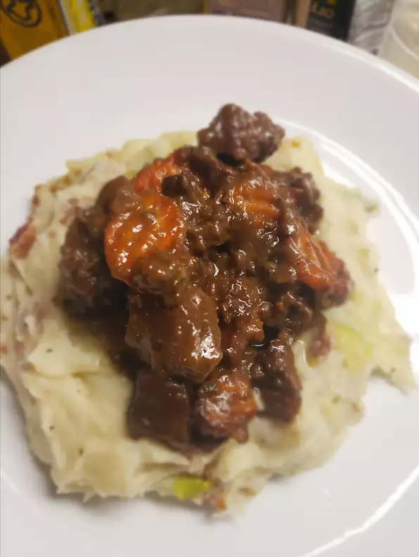

Beer braised stew and colcannon

Description
This is a recipe I shared with my girlfriends from my recipe club last year! It is a yummy alternative to corned beef for St. Pat's Day and a wonderful anytime dish!
The creamy consistence of the colcannon is a perfect partner for the meat part of the dish, and its flavour will add to the meat in ways you never believed possible!
Ingredients
- Beef stew
- 1 tablespoon vegetable oil
- 1 (3 pound) beef chuck roast, trimmed of fat and cut into 1/2-inch cubes
- 2 tablespoons all-purpose flour
- 1 cup coarsely chopped onion
- 1 cup coarsely chopped carrot
- 1 (12 fluid ounce) can or bottle dark beer
- 2 bay leaves
- 1 teaspoon dried thyme
- 1 teaspoon salt
- ½ teaspoon ground black pepper
- 2 cloves garlic, minced
- 2 tablespoons Worcestershire sauce
- Colcannon
- 3 slices of bacon
- 2 pounds of russet potatoes, peeled and cut into chunks
- 2 cups thinly sliced cabbage
- ¼ cup milk, warmed
- 2 tablespoons butter
- ½ teaspoon salt
- ¼ teaspoon ground black pepper
- 2 tablespoons minced fresh parsley
Steps
- Preheat oven to 325 degrees F (165 degrees C).
- Heat the vegetable oil in a large Dutch oven over medium-high heat until very hot, and brown the meat in 2 batches, stirring to brown the cubes on all sides. Return all the meat to the Dutch oven, sprinkle with flour, and stir lightly to coat the meat with flour. Stir in onion, carrots, dark beer, bay leaves, thyme, 1 teaspoon salt, 1/2 teaspoon pepper, garlic, and Worcestershire sauce. Bring the mixture to a boil, and cover.
- Place the Dutch oven into the preheated oven, and cook for 45 minutes; uncover, stir the stew, and cook until the beef is very tender and the liquid is reduced by half, about 45 more minutes.
- Place the bacon in a large, deep skillet, and cook over medium-high heat, turning occasionally, until evenly browned, about 10 minutes. Drain the bacon slices on a paper towel-lined plate. Crumble the bacon and set aside.
- About 30 minutes before the stew is ready, make the colcannon: Place the potatoes into a large pot and cover with salted water. Bring to a boil, then reduce heat to medium-low, cover, and simmer until tender, about 20 minutes. Drain and allow to steam dry for a minute or two.
- Place the cabbage into a microwave-safe bowl, and add 1 or 2 tablespoons of water. Cover and microwave on High for about 2 1/2 minutes; uncover (watch out for steam) and stir the cabbage. Cover and microwave for about 2 1/2 more minutes, until the cabbage is slightly tender but not mushy. Drain excess liquid, and set the cabbage aside, covered.
- Place the potatoes into a large bowl, and add milk, butter, 1/2 teaspoon of salt, and 1/4 teaspoon of pepper. Beat the potatoes with an electric mixer until smooth and creamy. Stir in the cabbage, crumbled bacon, and parsley until well combined.
- To serve, place a scoop of colcannon onto a plate, make a hollow, and fill with braised beef stew.
Back to home